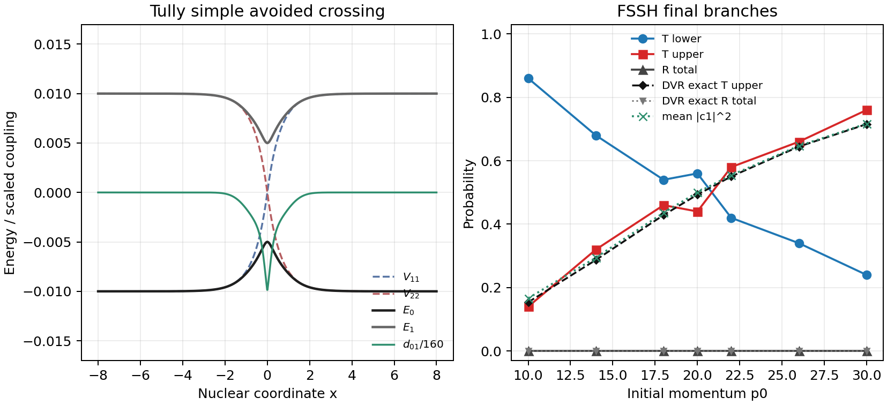

MQC Series - Part I
Fewest-Switches Surface Hopping
Part 0 introduced MQC as a closure problem: the electrons have amplitudes, but the nuclei need a force. Fewest-switches surface hopping keeps each trajectory on one active adiabatic surface, then uses stochastic hops to make the ensemble follow electronic population transfer with as few switches as possible.
Active-Surface Picture
For one trajectory, the electronic state is still propagated in the adiabatic basis,
The nuclei, however, feel only the active state \(a\):
Electronic amplitudes and active surfaces are therefore different bookkeeping layers. The coefficients describe coherent population flow; the active state determines the classical force used by that trajectory.
Fewest-Switches Rule
Let \(\rho_{ij}=c_i c_j^*\). Under the real two-state convention used in the benchmark script, the population flux from active state \(a\) toward state \(b\) is
The attempted hop probability during one time step is the positive part of this outgoing flux divided by the active population:
If a hop is selected, the nuclear momentum is rescaled so that the classical total energy is conserved:
If the kinetic energy is insufficient for an upward hop, the hop is frustrated and the trajectory remains on its original surface. In multidimensional simulations, this rescaling is normally done along the nonadiabatic-coupling direction.
Tully SAC Model
The test uses Tully's simple avoided crossing in a diabatic basis,
with \(A=0.01\), \(B=1.6\), \(C=0.005\), \(D=1.0\), \(M=2000\), and \(\hbar=1\). The trajectory starts on the lower adiabatic state at \(x=-10\). The benchmark scans initial momentum \(p_0=10,14,18,20,22,26,30\), runs 50 trajectories at each momentum, and stops once the trajectory leaves the interaction region.
DVR Reference
The black reference curve is not another MQC trajectory. It is obtained by diagonalizing a two-channel sinc-DVR Hamiltonian on a finite grid,
then propagating an initial Gaussian wavepacket centered at \(x_0=-10\), width \(\sigma=1\), and mean momentum \(p_0\) by exact phase factors in that finite Hilbert space. The final wavepacket is projected onto local adiabatic states and integrated on the transmitted and reflected sides. This gives an exact quantum reference for the chosen DVR grid and initial packet, not a point-particle limit.
Result
In this momentum window every FSSH trajectory exits on the transmitted side, so the useful diagnostic is not reflection but which adiabatic branch is occupied after the crossing. At \(p_0=20\), the final FSSH branch probabilities are \(T_0=0.560\) and \(T_1=0.440\), while the DVR reference gives \(T_1=0.493\) with negligible reflection. As \(p_0\) increases, the upper transmitted branch becomes more likely; the mean final electronic upper population rises from 0.166 at \(p_0=10\) to 0.717 at \(p_0=30\). The residual oscillation in the active-state probabilities is finite-ensemble noise from the compact 50-trajectory run.

Code used in this note
- fssh_tully_sac.py runs the FSSH ensemble, applies energy-conserving hops, writes CSV tables, and renders the benchmark figure.
- dvr_tully_sac_reference.py builds and diagonalizes the finite sinc-DVR two-channel Hamiltonian used for the exact quantum reference.
- tully_common.py defines the Tully SAC potential, adiabatic energies, forces, derivative coupling, and shared electronic propagation helpers.
- fssh-tully-sac.csv stores the momentum scan, branch probabilities, mean hop counts, and final electronic populations.
- fssh-tully-sac-summary.csv stores the compact numerical values quoted in the text.
- dvr-tully-sac-reference.csv stores the DVR transmitted/reflected lower/upper adiabatic probabilities.
References
- Tully, J. Chem. Phys. 93, 1061 (1990).
- Crespo-Otero and Barbatti, Chem. Rev. 118, 7026 (2018).
- Nelson, White, Bjorgaard, Sifain, Zhang, Nebgen, Fernandez-Alberti, Mozyrsky, Roitberg, and Tretiak, Chem. Rev. 120, 2215 (2020).